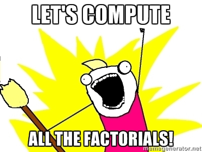

Prolog examples
Table of Contents
Fun with lists
%% Sorted is a sorted version of List if Sorted is %% a permutation of List (same elements in possibly %% different order) and Sorted is sorted (second rule). sorted(List, Sorted) :- perm(List, Sorted), sorted(Sorted). %% A list is sorted if it has zero or one elements, %% or if it has two or more and they are in the %% right order (recursively). sorted([]). sorted([_]). sorted([X,Y|Rest]) :- X =< Y, sorted([Y|Rest]). %% A permutation of a list is one of the elements %% of the original list stuck at the head of the %% permuted list, and the rest is a permuted version %% of the original list without that element. perm([],[]). perm(List, [H|Perm]) :- delete(H, List, Rest), perm(Rest, Perm). %% Delete an element from a list by just not including %% it when it's found (recursively; like the member rule). delete(X, [X|T], T). delete(X, [H|T], [H|NT]) :- delete(X, T, NT).
8-puzzle
Prolog does depth-first search natively. So, let's exploit that to solve the 8-puzzle problem.
First, we define the goal:
goal([1,2,3, 4,0,5, 6,7,8]).
Now, we define all the possible moves (a bit laboriously):
%% From: http://www-module.cs.york.ac.uk/lpa/prac2009/prolog-lab-3.pdf %% move left in the top row move([X1,0,X3, X4,X5,X6, X7,X8,X9], [0,X1,X3, X4,X5,X6, X7,X8,X9]). move([X1,X2,0, X4,X5,X6, X7,X8,X9], [X1,0,X2, X4,X5,X6, X7,X8,X9]). %% move left in the middle row move([X1,X2,X3, X4,0,X6,X7,X8,X9], [X1,X2,X3, 0,X4,X6,X7,X8,X9]). move([X1,X2,X3, X4,X5,0,X7,X8,X9], [X1,X2,X3, X4,0,X5,X7,X8,X9]). %% move left in the bottom row move([X1,X2,X3, X4,X5,X6, X7,0,X9], [X1,X2,X3, X4,X5,X6, 0,X7,X9]). move([X1,X2,X3, X4,X5,X6, X7,X8,0], [X1,X2,X3, X4,X5,X6, X7,0,X8]). %% move right in the top row move([0,X2,X3, X4,X5,X6, X7,X8,X9], [X2,0,X3, X4,X5,X6, X7,X8,X9]). move([X1,0,X3, X4,X5,X6, X7,X8,X9], [X1,X3,0, X4,X5,X6, X7,X8,X9]). %% move right in the middle row move([X1,X2,X3, 0,X5,X6, X7,X8,X9], [X1,X2,X3, X5,0,X6, X7,X8,X9]). move([X1,X2,X3, X4,0,X6, X7,X8,X9], [X1,X2,X3, X4,X6,0, X7,X8,X9]). %% move right in the bottom row move([X1,X2,X3, X4,X5,X6,0,X8,X9], [X1,X2,X3, X4,X5,X6,X8,0,X9]). move([X1,X2,X3, X4,X5,X6,X7,0,X9], [X1,X2,X3, X4,X5,X6,X7,X9,0]). %% move up from the middle row move([X1,X2,X3, 0,X5,X6, X7,X8,X9], [0,X2,X3, X1,X5,X6, X7,X8,X9]). move([X1,X2,X3, X4,0,X6, X7,X8,X9], [X1,0,X3, X4,X2,X6, X7,X8,X9]). move([X1,X2,X3, X4,X5,0, X7,X8,X9], [X1,X2,0, X4,X5,X3, X7,X8,X9]). %% move up from the bottom row move([X1,X2,X3, X4,X5,X6, X7,0,X9], [X1,X2,X3, X4,0,X6, X7,X5,X9]). move([X1,X2,X3, X4,X5,X6, X7,X8,0], [X1,X2,X3, X4,X5,0, X7,X8,X6]). move([X1,X2,X3, X4,X5,X6, 0,X8,X9], [X1,X2,X3, 0,X5,X6, X4,X8,X9]). %% move down from the top row move([0,X2,X3, X4,X5,X6, X7,X8,X9], [X4,X2,X3, 0,X5,X6, X7,X8,X9]). move([X1,0,X3, X4,X5,X6, X7,X8,X9], [X1,X5,X3, X4,0,X6, X7,X8,X9]). move([X1,X2,0, X4,X5,X6, X7,X8,X9], [X1,X2,X6, X4,X5,0, X7,X8,X9]). %% move down from the middle row move([X1,X2,X3, 0,X5,X6, X7,X8,X9], [X1,X2,X3, X7,X5,X6, 0,X8,X9]). move([X1,X2,X3, X4,0,X6, X7,X8,X9], [X1,X2,X3, X4,X8,X6, X7,0,X9]). move([X1,X2,X3, X4,X5,0, X7,X8,X9], [X1,X2,X3, X4,X5,X9, X7,X8,0]).
Now we can define depth-first search. Since Prolog does this naturally (it searches for values of variables to make predicates true), we just need to specify what should happen if the goal is not immediately found (i.e., a move should be made).
dfsSimplest(S, [S]) :- goal(S). dfsSimplest(S, [S|Rest]) :- move(S, S2), dfsSimplest(S2, Rest).
Let's try it with an initial state that is one left move away from the goal.
?- dfsSimplest([1,2,3, 0,4,5, 6,7,8], Path). Path = [[1, 2, 3, 0, 4, 5, 6, 7|...], [1, 2, 3, 4, 0, 5, 6|...]] .
Ok, it found the right move (the path lists two boards, the initial and the goal).
If we start with an initial board that is one down move away from the goal, …
?- dfsSimplest([1,2,3, 4,7,5, 6,0,8], Path). .... get a cup of coffee now? ERROR: Out of local stack
Prolog never found the answer. This is because it started with left
moves, then more left moves, etc…. If we rearrange the move
predicates so that the up-moves are first, the path is found
immediately again.
Apart from rearranging our move predicates, we can also avoid the problem of searching from the same states more than once. We need to keep track of "checked" states, so we'll add another parameter to our predicate:
dfs(S, Path, Path) :- goal(S). dfs(S, Checked, Path) :- % try a move move(S, S2), % ensure the resulting state is new \+member(S2, Checked), % and that this state leads to the goal dfs(S2, [S2|Checked], Path).
Let's try it:
?- dfs([1,2,3, 0,4,5, 6,7,8], [], Path). Path = [[1, 2, 3, 4, 0, 5, 6, 7|...]] .
Seems to work with the initial state just one left move from the goal.
Now let's make an initial state one up move from the goal. Recall that naive DFS ran out of memory (because it continued checking from repeated states).
?- dfs([1,2,3, 4,7,5, 6,0,8], [], Path), length(Path, N). Path = [[1, 2, 3, 4, 0, 5, 6, 7|...], [1, 2, 3, 0, 4, 5, 6|...], [0, 2, 3, 1, 4, 5|...], [2, 0, 3, 1, 4|...], [2, 3, 0, 1|...], [2, 3, 5|...], [2, 3|...], [2|...], [...|...]|...], N = 23759 .
23,759 moves (in the solution), when only one move was needed. The order of predicates in the database can be of critical importance.
A maze "game"
If you took my CSE 230 class, you'll remember building a maze game. Rooms were connected to other rooms, and players could walk through them. Each room had a description, and possibly even monsters that mocked you as you passed through.
Anyway, building such a game in Prolog is trivial (save for the monsters). Let's start with some room descriptions:
room(garden, 'Garden', 'You are in the Garden. The trees and shrubs appear...'). room(hallway, 'Hallway', 'You are in the Hallway. Dusty broken lamps and flower pots...'). room(kitchen, 'Kitchen', 'You are in the kitchen. Knives, pots, pans, ...'). room(library, 'Library', 'You are among many books in the Library...'). room(lair, 'Lair', 'You have found an apparently quite evil lair, of all things...'). connected(north, library, hallway). connected(south, hallway, library). connected(down, library, lair). connected(up, lair, library). connected(west, library, garden). connected(east, garden, library). connected(west, hallway, kitchen). connected(east, kitchen, hallway).
We'll add a predicate that causes the description of our room to be printed:
% this predicate has no inputs print_location :- current_room(Current), room(Current, Name, Description), % nl means "newline" print(Name), nl, print(Description), nl.
This predicate requires that current_room is a predicate that gives
the current room. E.g., current_room(library).
But the current room should change, naturally. We can change the facts
of the database in the middle of running the program by using
retract and assertz. The retract predicate ("meta-predicate"
technically) takes as input a predicate and removes it from current
facts. On the other hand, assertz adds a predicate to the list of
facts, at the bottom of the list (that's what the z means; the
alternative is to add the new fact at the top, in which case you use
asserta).
We have to indicate that the current_room predicate may be changed,
so we put this in our file:
:- dynamic current_room/1.
Now we can define a change room predicate:
change_room(NewRoom) :- current_room(Current), retract(current_room(Current)), assertz(current_room(NewRoom)).
We'll want user input. Here is a quick & dirty way that supports the word "go" followed by a direction:
:- use_module(library(readln)). :- prompt(_, 'Type a command (or ''help''): '). strip_punctuation([], []). strip_punctuation([Word|Tail], [Word|Result]) :- \+(member(Word, ['.', ',', '?', '!'])), strip_punctuation(Tail, Result). strip_punctuation([_|Tail], Result) :- strip_punctuation(Tail, Result). read_sentence(Input) :- % this is a special predicate from the readln library readln(Input1, _, ".!?", "_0123456789", lowercase), strip_punctuation(Input1, Input). get_input :- read_sentence(Input), get_input(Input). get_input([quit]). get_input(Input) :- process_input(Input), print_location, read_sentence(Input1), get_input(Input1). process_input([help]) :- print('Help...'), nl. process_input([go, Direction]) :- current_room(Current), connected(Direction, Current, NewRoom), change_room(NewRoom). process_input([go, _]) :- print('No exit that direction.'), nl. process_input([_]) :- print('Huh?'), nl, nl.
Finally, we define a play predicate that starts the whole thing:
play :- retractall(current_room(_)), assertz(current_room(library)), print_location, get_input.
Here is how we play:
?- play. Library You are among many books in the Library... Type a command (or 'help'): go west. Garden You are in the Garden. The trees and shrubs appear... Type a command (or 'help'): go bizarre. No exit that direction. Garden You are in the Garden. The trees and shrubs appear... Type a command (or 'help'): help. Help... Garden You are in the Garden. The trees and shrubs appear... Type a command (or 'help'): go east. Library You are among many books in the Library... Type a command (or 'help'): go down. Lair You have found an apparently quite evil lair, of all things... Type a command (or 'help'): quit. true
Now, let's make it a little more interesting. Suppose we have switches
that can be toggled, and access to certain rooms requires that certain
switches have been toggled. We'll first indicate that the toggled
predicate is dynamic (will be asserted and retracted):
:- dynamic toggled/1.
We'll also add support for typing "toggle switch15" or whatever:
process_input([toggle, Switch]) :- toggle(Switch), % retrieve a set of switches that have been toggled setof(X, toggled(X), Switches), % print these print('Toggled switches: '), print(Switches), nl. process_input([toggle, _]) :- print('Cannot toggle that switch.'), nl.
We'll have three switches. Switch 1 can be toggled whenever. But switch 2 requires that switch 1 is already toggled, and switch 3 requires that switch 2 is already toggled.
toggle(switch1) :- assertz(toggled(switch1)). toggle(switch2) :- toggled(switch1), assertz(toggled(switch2)). toggle(switch3) :- toggled(switch2), assertz(toggled(switch3)).
Finally, let's make the lair only accessible if switch 3 is toggled (of course, we remove the 'down' connection from the library and replace it with this one):
connected(down, library, lair) :- toggled(switch3).
And the play predicate is updated to retract all toggle states when
we start the game:
play :- retractall(current_room(_)), retractall(toggled(_)), assertz(current_room(library)), print_location, get_input.
Let's play!
?- play. Library You are among many books in the Library... Type a command (or 'help'): go down. No exit that direction. Library You are among many books in the Library... Type a command (or 'help'): toggle switch3. Cannot toggle that switch. Library You are among many books in the Library... Type a command (or 'help'): toggle switch2. Cannot toggle that switch. Library You are among many books in the Library... Type a command (or 'help'): toggle switch1. Toggled switches: [switch1] Library You are among many books in the Library... Type a command (or 'help'): toggle switch2. Toggled switches: [switch1,switch2] Library You are among many books in the Library... Type a command (or 'help'): toggle switch3. Toggled switches: [switch1,switch2,switch3] Library You are among many books in the Library... Type a command (or 'help'): go down. Lair You have found an apparently quite evil lair, of all things... Type a command (or 'help'): go up. Library You are among many books in the Library... Type a command (or 'help'): quit. true
Hopefully you can imagine how the game can be improved from here. For
example, how do we require that switch 1 can only be toggled in the
garden? Hint: the answer involves modifying toggle(switch1)
predicate to include the requirement that the current_room predicate
has a certain value…
Constraint logic programming (over finite domains)
The following text is a slightly modified version of a Wikibooks page: http://en.wikibooks.org/wiki/Prolog/Constraint_Logic_Programming
?- use_module(library(clpfd)).
Do you remember how arithmetic in Prolog fails when used with insufficiently instantiated variables? Try this for a starter:
?- X > Y, member(X,[1,2,3]), Y=2.
Even though there is logically one possible answer to this query
(X=3), Prolog cannot infer it. We can get the right answer by
rearranging the conjuncts of the query:
?- member(X,[1,2,3]), Y=2, X > Y.
CLP(fd) is a lot smarter than Prolog when it comes to arithmetic. Try this:
?- X #> Y, X in 1..3, Y=2.
This succeeds with the only correct answer, X=3. The predicate
#>/2, when given two variables, posts the constraint that it left
argument should be greater than its right argument. CLP(fd) holds this
constraint in its constraint store until it knows enough about the
variables' possible values to infer further information from it. The
moment that Y gets the value 2, CLP(fd) infers that X can only
have the value 3. What happens when we bind Y to 1 instead?
?- X #> Y, X in 1..3, Y=1. Y = 1, X in 2..3.
Rather than start backtracking over the possible values of X, CLP(fd)
constrains X to a smaller domain and stops. To have CLP(fd) search for
possible assignments to variables, we must tell it do so
explicitly. The simplest way to do that is with the predicate label/1:
?- X #> Y, X in 1..3, Y=1, label([X]). X = 2, Y = 1 ; X = 3, Y = 1.
What we've seen so far isn't very interesting, because there was only one constraint variable. Let's have a look at a problem with eight variables.
Send more money
The send more money puzzle is the quintessential example of a
constraint problem. It amount to assigning different digits 0
through 9 to the variables [S,E,N,D,M,O,R,Y] such that the sum
SEND + MORE = MONEY
is solved; S and M should both be greater than zero. Instead of
typing to the Prolog prompt, let's make a proper Prolog source file.
:- use_module(library(clpfd)). sendmoremoney(Vars) :- Vars = [S,E,N,D,M,O,R,Y], Vars ins 0..9, S #\= 0, M #\= 0, all_different(Vars), 1000*S + 100*E + 10*N + D + 1000*M + 100*O + 10*R + E #= 10000*M + 1000*O + 100*N + 10*E + Y.
ins/2 is the same as in/2, except that it sets the domains of
several variables at the same time. all_different is logically
equivalent to posting disequality constraints (#\=) on all pairs of
variables in Vars, but is shorter and possibly more efficient. Note
that we can express the sum as one constraint over all eight variables
at the same time. Let's try this out:
?- sendmoremoney([S,E,N,D,M,O,R,Y]). S = 9, M = 1, O = 0, E in 4..7, all_different([E, N, D, R, Y, 0, 1, 9]), 1000*9+91*E+ -90*N+D+ -9000*1+ -900*0+10*R+ -1*Y#=0, N in 5..8, D in 2..8, R in 2..8, Y in 2..8.
Even without labeling variables, CLP(fd) has inferred the values of three variables, has simplified the sum and put tighter bounds on the remaining five variables. Of course, we want values for all our variables:
?- Vars=[S,E,N,D,M,O,R,Y], sendmoremoney(Vars), label(Vars). Vars = [9, 5, 6, 7, 1, 0, 8, 2], S = 9, E = 5, N = 6, D = 7, M = 1, O = 0, R = 8, Y = 2.
Reverse factorial
Here is an example from some Prolog docs: http://www.swi-prolog.org/man/clpfd.html
:- use_module(library(clpfd)). factorial(0, 1). factorial(N, F) :- N #> 0, N1 #= N - 1, F #= N * F1, factorial(N1, F1).
The code above is the factorial function, written with constraints. We can use it in the normal way:
?- factorial(5, Fact). Fact = 120. ?- factorial(12, Fact). Fact = 479001600.
But we can also use it in reverse:
?- factorial(N, 479001600). N = 12.
Or, find out all the possible outputs:
?- factorial(N, F). N = 0, F = 1 ; N = F, F = 1 ; N = F, F = 2 ; N = 3, F = 6 ; N = 4, F = 24 ; N = 5, F = 120 ; N = 6, F = 720 ; N = 7, F = 5040 ; N = 8, F = 40320 ; N = 9, F = 362880 ; N = 10, F = 3628800 ; N = 11, F = 39916800 ; N = 12, F = 479001600 ......

?- findall([N, F], (N #< 50, factorial(N, F)), SomeFactorials), writeln(SomeFactorials). [[0,1],[1,1],[2,2],[3,6],[4,24],[5,120],[6,720],[7,5040],[8,40320],[9,362880],[10,3628800], [11,39916800],[12,479001600],[13,6227020800],[14,87178291200],[15,1307674368000], [16,20922789888000],[17,355687428096000],[18,6402373705728000],[19,121645100408832000], [20,2432902008176640000],[21,51090942171709440000],[22,1124000727777607680000], [23,25852016738884976640000],[24,620448401733239439360000],[25,15511210043330985984000000], [26,403291461126605635584000000],[27,10888869450418352160768000000], [28,304888344611713860501504000000],[29,8841761993739701954543616000000], [30,265252859812191058636308480000000],[31,8222838654177922817725562880000000], [32,263130836933693530167218012160000000],[33,8683317618811886495518194401280000000], [34,295232799039604140847618609643520000000],[35,10333147966386144929666651337523200000000], [36,371993326789901217467999448150835200000000], [37,13763753091226345046315979581580902400000000], [38,523022617466601111760007224100074291200000000], [39,20397882081197443358640281739902897356800000000], [40,815915283247897734345611269596115894272000000000], [41,33452526613163807108170062053440751665152000000000], [42,1405006117752879898543142606244511569936384000000000], [43,60415263063373835637355132068513997507264512000000000], [44,2658271574788448768043625811014615890319638528000000000], [45,119622220865480194561963161495657715064383733760000000000], [46,5502622159812088949850305428800254892961651752960000000000], [47,258623241511168180642964355153611979969197632389120000000000], [48,12413915592536072670862289047373375038521486354677760000000000], [49,608281864034267560872252163321295376887552831379210240000000000]]
So, we wrote a function, then collected (some of) the valid input/output pairs of that function, just by asking for them. Can your programming language do that?
Sudoku
The key to solving Sudoku puzzles with Prolog is to use the clpfd
(constraint logic programming over finite domains) library to restrict
the search space to numbers 1-9. Then, it's just a matter of
describing what a solution looks like.
%% need the module "clpfd" (constraint logic programming over finite domains) %% so that we can specify the range of numbers to search ?- use_module(library(clpfd)). sudoku(Rows) :- length(Rows, 9), % ensure there are 9 rows maplist(length_(9), Rows), % ensure each row has 9 elements (see below for length_) append(Rows, Vs), % combined all rows into the variable Vs Vs ins 1..9, % ensure that the elements of Vs should be numbers 1-9 maplist(all_distinct, Rows), % ensure each row is distinct transpose(Rows, Columns), % flip the matrix maplist(all_distinct, Columns), % ensure each column is distinct Rows = [A,B,C,D,E,F,G,H,I], % create variables A-I for each row blocks(A, B, C), % make sure all values in these three rows (three 3x3 blocks) are distinct blocks(D, E, F), % ... and these rows/blocks blocks(G, H, I). % ... and these rows/blocks length_(L, Ls) :- length(Ls, L). % version of length that's easierto use with maplist (above) % this predicate ensures a "block" (3x3 grid) contains only distinct values blocks([], [], []). blocks([A,B,C|Bs1], [D,E,F|Bs2], [G,H,I|Bs3]) :- all_distinct([A,B,C,D,E,F,G,H,I]), blocks(Bs1, Bs2, Bs3). problem([[_,_,_,_,_,_,_,_,_], [_,_,_,_,_,3,_,8,5], [_,_,1,_,2,_,_,_,_], [_,_,_,5,_,7,_,_,_], [_,_,4,_,_,_,1,_,_], [_,9,_,_,_,_,_,_,_], [5,_,_,_,_,_,_,7,3], [_,_,2,_,1,_,_,_,_], [_,_,_,_,4,_,_,_,9]]). problem([[_,_,_,_,_,_,_,_,_], [_,_,_,_,_,3,_,8,5], [_,_,9,_,2,_,_,_,_], [_,_,_,5,_,7,_,_,_], [_,_,4,_,_,_,9,_,_], [_,1,_,_,_,_,_,_,_], [5,_,_,_,_,_,_,7,3], [_,_,2,_,9,_,_,_,_], [_,_,_,_,4,_,_,_,1]]). % top-left of: % http://puzzles.about.com/library/sudoku/blprsudokuh16.htm problem([[_,_,_,8,4,_,_,_,9], [_,_,1,_,_,_,_,_,5], [8,_,_,_,2,1,4,6,_], [7,_,8,_,_,_,_,9,_], [_,_,_,_,_,_,_,_,_], [_,5,_,_,_,_,3,_,1], [_,2,4,9,1,_,_,_,7], [9,_,_,_,_,_,5,_,_], [3,_,_,_,8,4,_,_,_]]). % from: % http://www.jibble.org/impossible-sudoku/ problem([[_,7,_,_,_,6,_,_,_], [9,_,_,_,_,_,_,4,1], [_,_,8,_,_,9,_,5,_], [_,9,_,_,_,7,_,_,2], [_,_,3,_,_,_,8,_,_], [4,_,_,8,_,_,_,1,_], [_,8,_,3,_,_,9,_,_], [1,6,_,_,_,_,_,_,7], [_,_,_,5,_,_,_,8,_]]). % from: % http://www.guardian.co.uk/media/2010/aug/23/worlds-hardest-sudoku-solution?INTCMP=SRCH#_ problem([[_,_,5,3,_,_,_,_,_], [8,_,_,_,_,_,_,2,_], [_,7,_,_,1,_,5,_,_], [4,_,_,_,_,5,3,_,_], [_,1,_,_,7,_,_,_,6], [_,_,3,2,_,_,_,8,_], [_,6,_,5,_,_,_,_,9], [_,_,4,_,_,_,_,3,_], [_,_,_,_,_,9,7,_,_]]). problem([[_,3,1,_,_,_,_,8,_], [_,_,2,_,7,_,9,_,4], [_,_,6,8,_,_,_,_,_], [_,_,_,6,1,_,_,_,_], [6,_,_,_,2,_,_,_,3], [_,_,_,_,4,5,_,_,_], [_,_,_,_,_,1,2,_,_], [7,_,5,_,3,_,8,_,_], [_,9,_,_,_,_,6,3,_]]). solve_problems :- problem(Rows), statistics(runtime, _), % builtin function, establishes "runtime" variable sudoku(Rows), % solve the puzzle maplist(writeln, Rows), % show the solution (writeln, i.e., println each row) statistics(runtime, [_,T]), % use "runtime" variable to compute total time write('CPU time = '), write(T), write(' msec'), nl, nl, false. % write total time